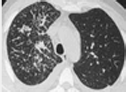

快速问医生
今日已帮助解决1,5240个问题
搜索健康
搜索
经验
分享
分享
健康源于传递

专家免费就诊活动(8月14-8月31日)
- 痛经
- 皮肤过敏
- 阑尾炎
- 青春痘
- 感冒
- 乙肝
- 咽喉炎
- 阳痿早泄
- 手足口病
- 咳嗽
丰胸,造就完美性感天使
女人窝
妩媚性感美女
- 女性必备
- 宫颈糜烂
- 乳腺炎
- 盆腔炎
- 人流
- 美白
- 婴儿专题
- 孕前准备
- 白带增多
- 丰胸
美食
偏方
偏方
养颜美容秘方
夏季昏昏欲睡 6大食物赶走瞌睡虫
- 肝病
- 补血妙招
- 壮阳食谱
- 杏仁粥
- 美容
- 护嗓
- 开心果
- 育儿喂养
- 丰胸水果
- 咳嗽
健康经验
| 分享让大家享受健康- 查看更多
- 内科
- 外科
- 妇产科
- 皮肤科
- 男科

胸膜积液怎么预防?
胸膜积液的病人是非常难受的,有时候不能呼吸,严重时候甚至会影响......
- 教你如何诊断胸膜积液?
- 胸膜积液该如何及时治疗?
- 女性贫血该怎么办?
- 结石该吃什么药?
选项二页面
选项三页面
选项4页面
选项5页面